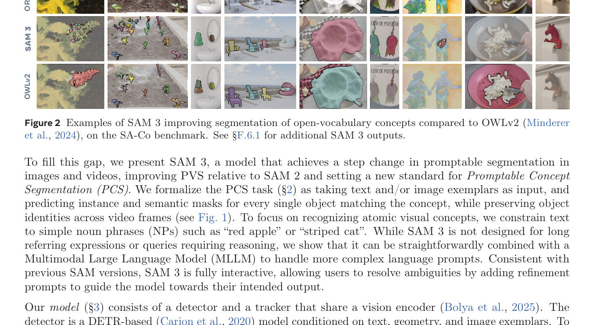

SAM3¶
📄 论文链接：arXiv:2511.16719 | PDF
作者：Nicolas Carion, Laura Gustafson, Yuan-Ting Hu 等（Meta Superintelligence Labs）
发表：2025 年 11 月
目录¶
核心要点¶
- 新任务定义：SAM 3 正式定义了 Promptable Concept Segmentation（PCS） 任务——给定文本短语（短名词短语）或图像 exemplar，检测、分割并跟踪图像或视频中的所有目标实例，并保持跨帧的对象身份
- 架构创新：采用 detector + tracker 双模块设计，共享 Perception Encoder 骨干网络；引入 presence token 解耦识别（recognition）与定位（localization），显著提升开放词汇检测准确率
- 数据引擎：构建了可扩展的数据引擎，产出包含 400 万唯一概念标签（含难负例）的高质量数据集，以及 3800 万短语 + 14 亿 mask 的合成数据集
- 性能突破：在 LVIS 零样本检测上大幅超越此前最佳方法，在新提出的 SA-Co 基准上显著超越基线
- 交互能力：支持文本 + 图像 exemplar 组合提示，允许用户通过正/负 bounding box 迭代精化分割结果
1. 背景与动机¶
1.1 SAM 系列的演进¶
SAM 1（2023）：引入可提示分割（promptable segmentation）任务，聚焦于 Promptable Visual Segmentation（PVS）——通过点、框或 mask 提示分割单个对象。
SAM 2（2024）：将 PVS 扩展到视频领域，支持跨帧的对象跟踪与分割。
局限性：SAM 1/2 均未解决查找并分割任意位置出现的所有目标实例这一通用任务。例如，用户想要分割视频中所有出现的"猫"，而非仅通过点击提示分割单只猫。
1.2 核心洞察¶
SAM 3 的目标是填补这一空白：
- 从单实例到多实例：不再局限于"一个提示对应一个对象"，而是"一个概念对应所有匹配实例"
- 从视觉提示到概念提示：引入文本短语（如"yellow school bus"）和图像 exemplar 作为概念定义方式
- 统一图像与视频：单一模型同时支持图像和视频的概念分割
1.3 技术挑战¶
- 开放词汇检测：需要识别任意名词短语对应的视觉概念，而非封闭类别集
- 歧义性处理：同一短语可能对应多种解释（如"mouse"可指鼠标或老鼠）
- 数据标注成本：概念分割需要穷举标注所有实例，成本远高于单实例标注
- 任务冲突：检测器需要身份无关（identity-agnostic），而跟踪器需要区分身份（identity-aware）

Figure 1: SAM 3 在点击提示（左）上改进 SAM 2 的视觉分割能力，并引入新的概念分割能力（右）。用户可以通过短名词短语、图像 exemplar（正/负）或两者组合来指定视觉概念。2. Promptable Concept Segmentation（PCS）任务定义¶
2.1 任务形式化¶
输入：图像或短视频（≤30 秒），以及概念提示（文本短语、图像 exemplar 或两者组合）
输出： - 所有匹配概念的对象的实例 mask和语义 mask - 视频中跨帧的对象身份（identity）
2.2 提示类型¶
文本提示： - 限制为简单名词短语（Noun Phrases, NPs），如"red apple"、"striped cat" - 不支持长指代表达或需要推理的查询 - 可通过与多模态大语言模型（MLLM）组合来处理更复杂的语言提示
图像 exemplar： - 以 bounding box + 二元标签（正/负）的形式提供 - 可在单帧上交互式添加，用于精化目标 mask - 正 exemplar：添加匹配对象；负 exemplar：排除误检对象
2.3 交互流程¶
初始提示（文本短语 或 图像 exemplar）
↓
模型输出所有匹配实例的 mask
↓
用户检查输出，发现遗漏或误检
↓
添加精化提示（正/负 bounding box）
↓
模型更新输出
2.4 歧义性处理¶
PCS 任务本质上是模糊的：
- 多义性："mouse"可指鼠标设备或老鼠
- 主观描述："cozy"、"large"等形容词因人而异
- 边界模糊："mirror"是否包含镜框？
- 遮挡与模糊：影响对象边界的判断
解决方案： 1. 测试标注由3 位专家完成，评估协议允许多种有效解释 2. 数据管线/指南设计以最小化标注歧义 3. 模型中引入歧义模块（ambiguity module，详见附录 §C.2）
3. 模型架构¶
SAM 3 是 SAM 2 的泛化，同时支持新的 PCS 任务和原有的 PVS 任务。架构由双编码器-解码器 Transformer 组成——用于图像级能力的检测器（detector） 与用于视频的跟踪器（tracker） 和记忆模块（memory） 结合使用。
3.1 整体架构概览¶
输入图像/视频帧
↓
Perception Encoder（PE）骨干网络（共享）
↓
├─→ 检测器（Detector）
│ ├─ Fusion Encoder（融合文本/图像 exemplar 提示）
│ ├─ DETR Decoder（预测 bounding box + mask）
│ ├─ Presence Token（全局存在性预测）
│ └─ Mask Head（实例 mask + 语义 mask）
│
└─→ 跟踪器（Tracker）
├─ Prompt Encoder
├─ Mask Decoder
├─ Memory Encoder
└─ Memory Bank
 Figure 4: SAM 3 架构概览。由检测器和跟踪器组成，共享 Perception Encoder 骨干网络。
Figure 4: SAM 3 架构概览。由检测器和跟踪器组成，共享 Perception Encoder 骨干网络。
3.2 检测器架构¶
检测器遵循 DETR 范式，基于（M）DETR 系列。
编码阶段： 1. 图像编码：PE 骨干网络提取图像特征 2. 文本编码：文本短语编码为文本 token 3. 图像 exemplar 编码：通过 exemplar encoder 编码，包含： - 位置 embedding - 标签 embedding（正/负） - ROI-pooled 视觉特征 - 通过小型 Transformer 处理后与文本 prompt 拼接
融合阶段： - Fusion Encoder 接收图像编码器的无条件 embedding - 通过 cross-attention 融合 prompt token（文本 token + 图像 exemplar token）
解码阶段： - DETR-like decoder，学习到的 object queries 通过 cross-attention 关注融合后的图像 embedding - 每层 decoder 预测： - 分类 logit：每个 object query 是否匹配 prompt（二元标签） - Bounding box delta：相对于上一层预测的偏移量 - 使用 box-region-positional bias 聚焦注意力于每个对象 - 采用 vanilla attention（未使用 Deformable Attention 等变体）
训练目标： - Dual supervision（来自 DAC-DETR） - Align loss（来自 Cai et al., 2024）
Mask Head： - 改编自 MaskFormer - 预测每个对象的实例 mask - 额外的语义分割 head：预测图像中每个像素是否属于 prompt 的二元标签
3.3 Presence Token：解耦识别与定位¶
核心问题：
每个 proposal query 需要同时解决两个任务： 1. 识别（Recognition, what）：判断图像中是否存在目标概念 2. 定位（Localization, where）：找到对象的具体位置
这两个任务存在冲突： - 识别需要全局上下文线索（整张图像的信息） - 定位是局部任务，需要聚焦于特定区域 - 强制 proposal query 同时理解全局上下文会适得其反
解决方案：
引入学习到的全局 presence token，专门负责预测目标概念是否存在于图像/帧中：
每个 proposal query \(q_i\) 只需解决定位问题：
最终得分：
每个 proposal query 的最终得分是其自身得分与 presence 得分的乘积：
设计意义：
- Proposal query 可以专注于局部定位，无需理解全局上下文
- Presence token 负责全局判断，提供先验信息
- 乘积形式确保：如果概念不存在于图像中，所有 proposal 的得分都被抑制
效果：
消融实验表明，presence token 在训练包含挑战性负例时尤其有效，显著提升开放词汇检测准确率。
3.4 跟踪器与视频架构¶
给定视频和提示 \(P\)，使用检测器和跟踪器在整个视频中检测和跟踪与提示匹配的对象。
逐帧处理流程：
对于每一帧 \(t\)：
- 检测新对象：
检测器在当前帧 \(I_t\) 和提示 \(P\) 下检测新对象 \(O_t\)
- 传播已有 masklet：
跟踪器将前一帧 \(t-1\) 的 masklet \(M_{t-1}\) 传播到当前帧的新位置 \(\hat{M}_t\)
- 匹配与更新：
匹配函数将传播的 masklet \(\hat{M}_t\) 与当前帧新出现的对象 mask \(O_t\) 关联
跟踪单个对象（SAM 2 风格传播）：
- 在第一帧检测到的每个对象初始化一个 masklet
- 在后续每一帧，跟踪器模块基于 masklet 的前一位置 \(M_{t-1}\)，通过类似 SAM 2 视频对象分割任务的单帧传播步骤预测新位置 \(\hat{M}_t\)
- 跟踪器与检测器共享相同的图像/帧编码器（PE 骨干网络）
- 训练检测器后，冻结 PE，然后训练跟踪器（类似 SAM 2）
记忆机制：
- Memory Encoder：Transformer 结构，包含：
- 当前帧视觉特征的 self-attention
- 从视觉特征到 memory bank 中空间记忆特征的 cross-attention
- Memory Bank：编码对象外观，使用来自过去帧和条件帧（对象首次检测到或用户提示的帧）的特征
- 推理时：仅保留对象确信存在的帧在 memory bank 中
Mask Decoder：
- 双向 Transformer，在编码器隐藏状态和输出 token 之间交互
- 处理遮挡、消失和重新出现的情况
3.5 设计哲学：解耦检测与跟踪¶
任务冲突：
- 检测器需要身份无关（identity-agnostic）：关注"这个区域是否有匹配概念的对象"，不关心对象身份
- 跟踪器需要区分身份（identity-aware）：关注"这个对象在视频中的身份是什么"，需要保持跨帧一致性
解耦设计：
- 检测器和跟踪器是独立的模块，共享骨干网络但有不同的 heads 和训练目标
- 检测器专注于图像级识别与定位
- 跟踪器专注于视频级身份保持
- 避免任务冲突，各自优化
4. 数据引擎¶
SAM 3 的核心贡献之一是构建了可扩展的数据引擎，产出高质量训练数据。
4.1 数据引擎概览¶
 Figure 5: SAM 3 最终数据引擎概览。
Figure 5: SAM 3 最终数据引擎概览。
三大创新：
- 媒体策展（Media Curation）：
- 策展比过去依赖同质化 web 来源更多样化的媒体领域
-
涵盖不同场景、光照、视角、分辨率
-
标签策展（Label Curation）：
- 利用本体论（ontology） 和多模态 LLM 作为"AI 标注器"生成名词短语和难负例（hard negatives）
- 显著增加标签多样性和难度
-
400 万唯一短语标签
-
标签验证（Label Verification）：
- 微调 MLLM 成为"AI 验证器"，达到接近人类的准确率
- 将标注吞吐量翻倍
- 从噪声的媒体-短语-mask 伪标签开始，数据引擎检查 mask 质量和穷举性
4.2 数据管线¶
初始阶段： - 从 web 数据生成噪声的媒体-短语-mask 伪标签
验证阶段： - 使用人类和 AI 验证器检查 mask 质量和穷举性 - 过滤掉正确标注的样本 - 识别具有挑战性的错误案例
精化阶段： - 人类标注器专注于修复错误 - 手动修正 mask
最终产出： - 高质量数据集：400 万唯一短语，5200 万 mask - 合成数据集：3800 万短语，14 亿 mask
4.3 难负例策略¶
为什么需要难负例：
开放词汇检测的关键挑战是区分相似概念。例如： - "cat" vs. "dog" - "red apple" vs. "green apple" - "striped cat" vs. "tabby cat"
生成方式：
利用本体论和多模态 LLM 生成与目标概念语义相近但不同的短语作为负例。
训练效果：
消融实验表明，添加难负例显著提升了模型对细粒度概念的区分能力。
5. 实验¶
5.1 评估基准¶
SA-Co（Segment Anything with Concepts）：
SAM 3 新提出的基准，包含： - 20.7 万唯一概念 - 12 万图像和1700 视频 - 穷举 mask 标注 - 比现有基准多 50 倍以上的概念数量
其他基准： - LVIS（零样本检测） - COCO - 视频对象分割基准
5.2 主要结果¶
LVIS 零样本检测： - SAM 3 大幅超越此前最佳方法
SA-Co 基准： - SAM 3 显著超越基线
视觉提示（PVS）： - 在 SAM 2 的基础上改进视觉提示能力
5.3 推理效率¶
硬件：H200 GPU
图像： - 单张图像（100+ 检测对象）：30 ms
视频： - 推理延迟随对象数量缩放 - 约 5 个并发对象时维持近实时性能
6. 总结¶
6.1 核心贡献¶
- 新任务定义：正式定义 Promptable Concept Segmentation（PCS），统一图像和视频的概念分割
- 架构创新：detector + tracker 双模块设计，presence token 解耦识别与定位
- 数据引擎：可扩展的数据管线，产出 400 万唯一概念标签的高质量数据集
- 性能突破：LVIS 零样本检测和 SA-Co 基准均大幅超越此前最佳方法
- 开源贡献：开源 SA-Co 基准、SAM 3 模型权重和推理代码
6.2 技术亮点¶
Presence Token 的解耦设计：
将识别（全局判断概念是否存在）与定位（局部找到对象位置）解耦，解决了两个任务的冲突问题。这种设计哲学（关注点分离）与 Flamingo 的 Gated Cross-Attention Dense 的双门控设计有异曲同工之妙。
检测器与跟踪器的解耦：
检测器身份无关，跟踪器身份感知，避免任务冲突。共享骨干网络但独立训练，体现了模块化设计的优势。
数据工程的系统化：
数据引擎的三大创新（媒体策展、标签策展、标签验证）形成了可扩展的闭环，为大规模概念分割数据的标注提供了可复用的范式。
6.3 局限性与未来方向¶
文本提示的限制：
SAM 3 限制文本为简单名词短语，不支持长指代表达或需要推理的查询。论文展示了与 MLLM 组合处理复杂提示的可能性，但集成方式尚不深入。
歧义性处理：
虽然引入了歧义模块和多位专家标注，但概念分割的固有歧义性仍未完全解决，尤其是在主观描述和边界模糊的场景。
视频规模：
SA-Co 基准包含 1700 视频，相比图像数据（12 万）规模较小。视频概念分割的泛化能力仍需更多数据验证。
附录：关键概念解释¶
A.1 Perception Encoder（PE）¶
Meta 开发的对齐视觉-语言骨干网络，用于提取图像特征。SAM 3 的检测器和跟踪器共享 PE 作为视觉编码器。
A.2 DETR（DEtection TRansformer）¶
基于 Transformer 的目标检测框架，使用学习到的 object queries 通过 cross-attention 预测 bounding box 和分类。SAM 3 的检测器基于（M）DETR 系列。
A.3 Masklet¶
视频中跨帧的时空 mask，表示单个对象在时间维度上的分割结果。SAM 3 的跟踪器负责维护和传播 masklet。
A.4 难负例（Hard Negatives）¶
与目标概念语义相近但不同的短语，用于训练模型区分细粒度概念。例如，对于"cat"，难负例可能是"dog"、"kitten"等。
笔记完成时间：2026-06-30 笔记作者：Claude Code 论文来源：arXiv:2511.16719